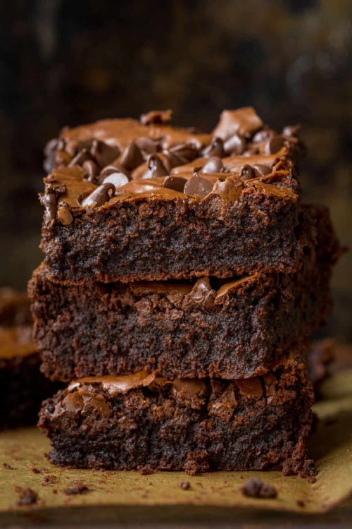
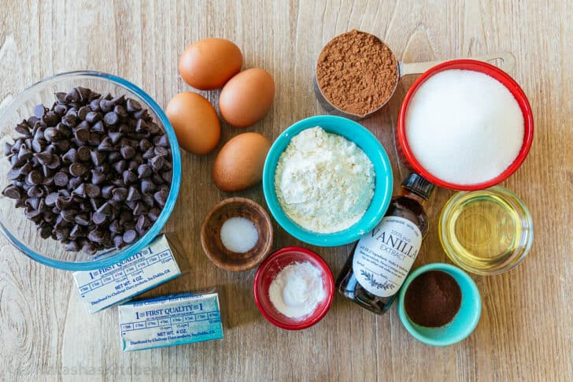
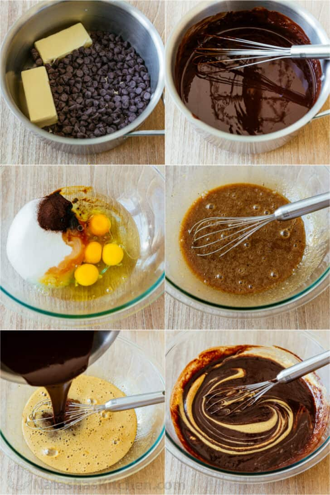
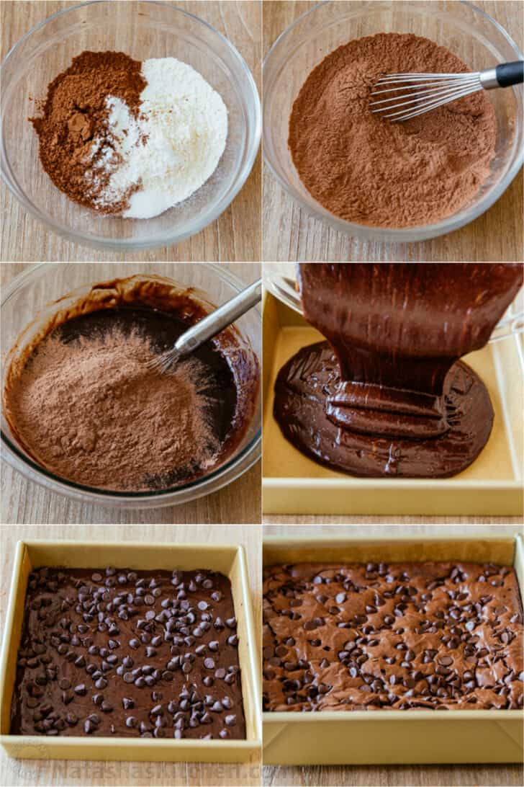
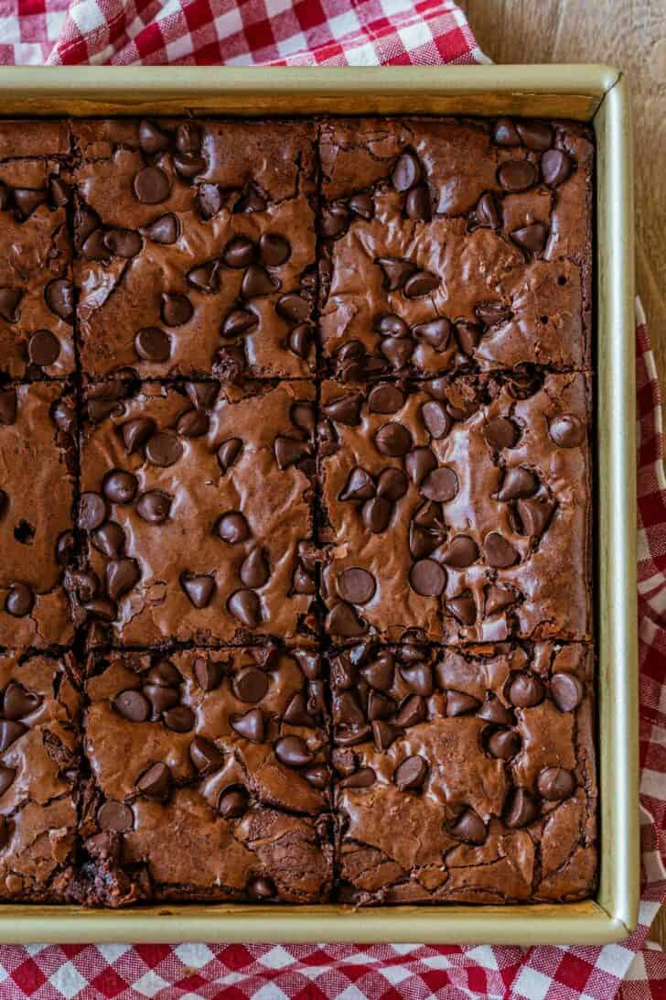

Fudgy Brownie Recipe
August 21, 2020
The ultimate Fudgy Brownie Recipe! These homemade brownies are decadent and stay moist for days. Plus, there’s a secret ingredient that makes them super chocolatey without being overly sweet.

The Only Brownie Recipe You’ll Need!
The inspiration for these brownies came from Ina Garten’s Outrageous Brownies in the Barefoot Contessa Cookbook. We made them fudgier and supremely chocolatey. Here’s why these are the best homemade brownies:
- Easy brownies – No fancy equipment or tools required. All you need is a saucepan, spatula, whisk, and a couple of bowls to make the batter.
- No Room Temperature Ingredients Needed – you don’t have to plan ahead and can start making brownies as soon as the craving strikes.
- Fudgiest Center – these literally stay moist and fudgy for days. I made the last batch on a Wednesday and ate the last piece on Sunday and it was still moist and satisfying.
- Rich Chocolate Flavor – adding the cocoa powder and chocolate chips make these intensely chocolatey without being overly sweet.
- Crackly Top – These brownies have that classic, irresistible crackly top.

How to Make the Best Brownies:
- Melt Chocolate: In a saucepan over low heat, melt together 2 cups chocolate chips and butter. Set aside to cool 15 minutes.
- Wet Ingredients:: Whisk together eggs, sugar, instant coffee granules, oil, and vanilla extract. Whisk the cooled chocolate mixture into the egg mixture.

- Dry Ingredients: Whisk together flour, cocoa, baking powder, and salt then fold these dry ingredients into the chocolate batter until no streaks remain.
- Pour and Bake: Spread brownie batter into prepared pan, sprinkle the top with the reserved 1/2 cup chocolate chips, and bake at 350˚F for 35-40 minutes.

How Long to Bake Brownies:
- Fudgy Brownies – Bake for 35-37 minutes. A toothpick inserted into the center will come out fudgy.
- Soft and Moist Brownies – Bake for 40 minutes. A toothpick inserted in the center should come out with moist crumbs attached.
How to Store Brownies:
- At Room Temperature – Brownies can be stored at room temperature in a low humidity environment. To keep them fresh and moist, cover with plastic wrap directly over the brownies and store in an airtight container for 4-5 days.
- Freezer – brownies can be frozen for up to 3 months. To keep brownies moister, do not cut brownies until you are ready to eat them.
